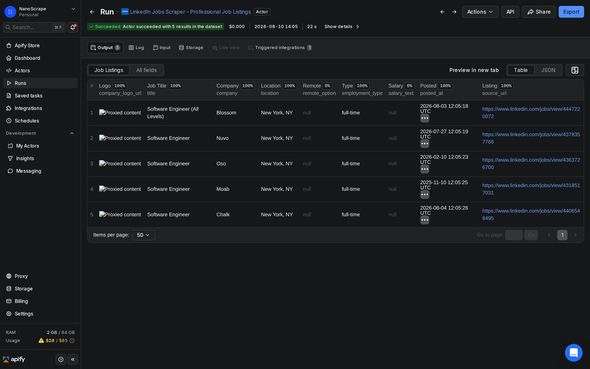
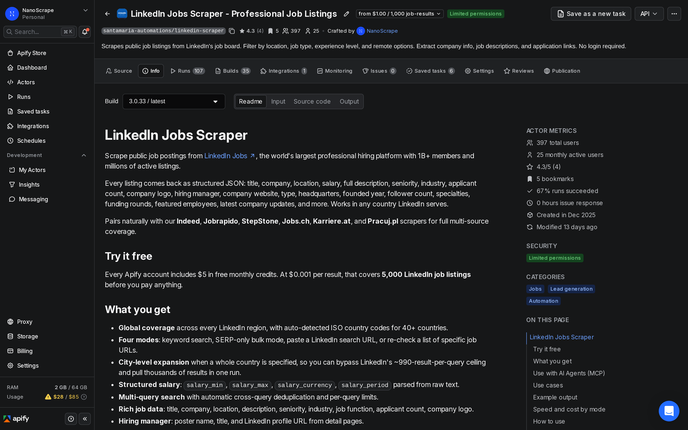
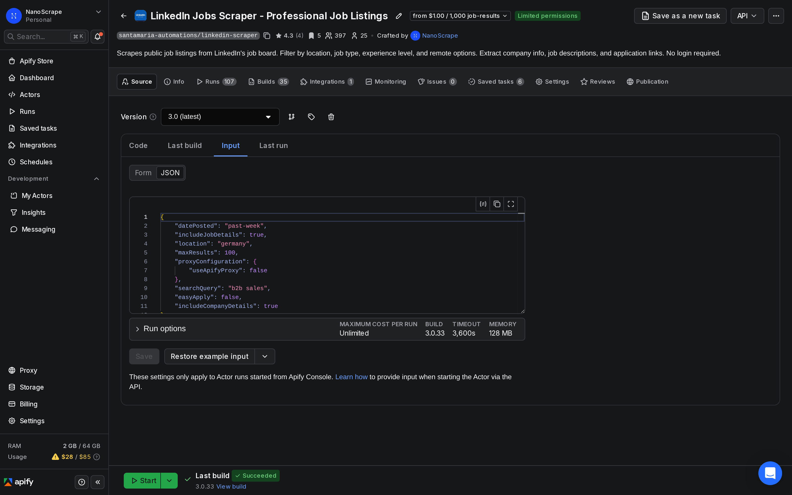
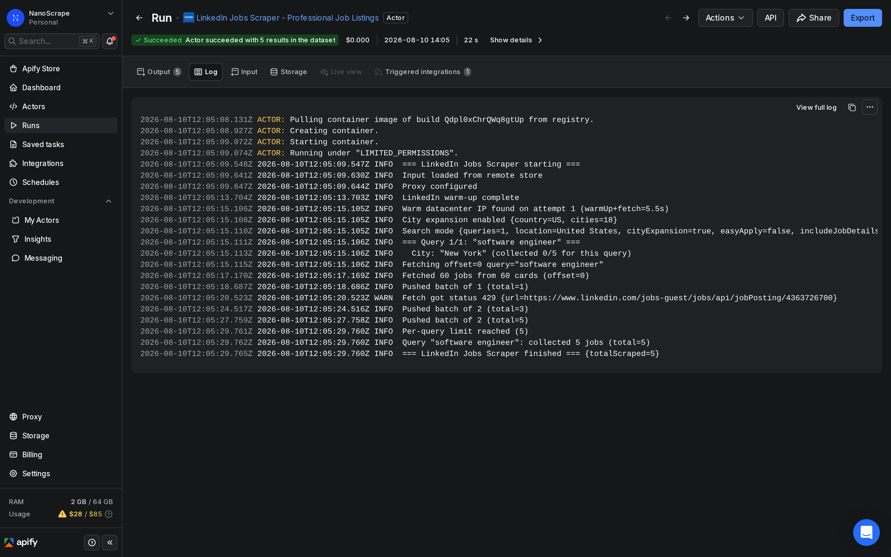

How to Scrape LinkedIn Job Listings Without a Login
Pull job titles, companies, locations, salaries, employment types, seniority levels, applicant counts, and full descriptions from LinkedIn Jobs. No LinkedIn account needed. Four input modes cover keyword search, pasted URLs, and still-alive monitoring. Pricing starts at $0.001 per listing.

In this tutorial
What data you get
Each run returns one dataset row per job listing. All data comes from LinkedIn's public job search pages, which are visible to any visitor without an account. The actor uses plain HTTP requests so runs are fast and cost-effective.
{
"id": "4371481846",
"title": "Senior Software Engineer, Backend",
"company": "Acme Analytics",
"location": "New York, NY",
"country": "US",
"job_status": "online",
"employment_type": "full-time",
"seniority_level": "Mid-Senior level",
"remote_option": "hybrid",
"salary_text": "$140,000 - $180,000/yr",
"salary_min": 140000,
"salary_max": 180000,
"salary_currency": "USD",
"salary_period": "year",
"company_industry": "Technology, Information and Internet",
"company_employee_count": "201-500 employees",
"company_website": "https://www.acmeanalytics.example",
"applicants": "<25",
"description_snippet": "We are looking for a Senior Software Engineer to join our platform team...",
"description_full": "Full job description text...",
"posted_at": "2026-08-05T00:00:00.000Z",
"source_url": "https://www.linkedin.com/jobs/view/4371481846",
"search_query": "Senior Software Engineer",
"scraped_at": "2026-08-10T08:30:00.000Z"
}Core output fields
title,company,location,country: the basic listing details.employment_type: full-time, part-time, contract, temporary, or internship.seniority_level: entry, associate, mid-senior, director, or executive.remote_option: remote, hybrid, or on-site.salary_min,salary_max,salary_currency,salary_period: structured salary data when LinkedIn publicly displays it.applicants: normalized to <25, 95, 200+, or similar.description_full: the complete job description text (requiresincludeJobDetails: true).job_poster_name,job_poster_title,job_poster_profile_url: the hiring manager when LinkedIn exposes them.company_follower_count,company_founded,company_funding_rounds: company enrichment whenincludeCompanyDetails: true.job_status: online, expired, or offline, useful for still-alive monitoring in direct-URL mode.
Four input modes
Pick the mode that matches your workflow. All four modes produce the same output fields.
- Keyword search (default) - provide
searchQueriesand an optionallocation. Best for discovering jobs you want to monitor over time. - SERP-only bulk mode - set
includeJobDetails: falseto skip the per-job detail fetch. Returns title, company, location, and posted date at roughly 3x the speed. Best for large market scans. - Start URLs - paste a LinkedIn job search URL from your browser directly into
startUrls. Useful when you want to replicate a filtered search you set up manually. - Direct URLs - pass specific LinkedIn job URLs in
directUrlsto check if those listings are still live. Perfect for verifying jobs already stored in your database.
Prerequisites
- A free Apify account. Sign up at the actor page. The free tier includes $5 of usage credit each month, which covers about 4,999 job listings.
- Keywords or LinkedIn job search URLs to target. If you want to paste a custom filtered search URL, run a search on LinkedIn first and copy the URL from your browser's address bar.
Open the actor
- Go to the NanoScrape LinkedIn Jobs Scraper on Apify.
- Click Try for free. Sign up with Google or email. It takes about a minute.
- Once signed in, the actor opens in Apify Console with the Input tab active.

Configure your search
In the Input tab, click JSON editor at the top right. Paste the input below to start a keyword search with filters:
{
"searchQueries": ["Software Engineer", "Data Scientist"],
"location": "United States",
"datePosted": "past-week",
"jobType": "full-time",
"experienceLevel": "mid-senior",
"remoteFilter": "remote",
"maxResultsPerQuery": 100,
"includeJobDetails": true
}Key input parameters
searchQueries: array of keyword strings. The actor deduplicates results across queries automatically.location: city, region, or country. Set a whole country like"Germany"to trigger automatic city expansion, which bypasses LinkedIn's ~990-result-per-query ceiling.datePosted:any,past-24h,past-week, orpast-month.jobType:full-time,part-time,contract,temporary, orinternship.experienceLevel:entry,associate,mid-senior,director, orexecutive.remoteFilter:remote,hybrid, oron-site.maxResultsPerQuery: cap per keyword (default 990 with city expansion).includeJobDetails: set tofalsefor SERP-only bulk mode (title, company, location only, but 3x faster).easyApply: set totrueto return only LinkedIn Easy Apply listings.
Bulk mode for large market scans
If you need thousands of listings fast and only need title, company, location, and posted date, skip the per-job detail fetch:
{
"searchQueries": ["Data Scientist"],
"location": "Germany",
"includeJobDetails": false,
"maxResultsPerQuery": 500
}
startUrls and set maxResultsPerQuery to cap results. The actor paginates from your exact filter setup.Run the actor
Click Start at the top right. The run log shows each query as it processes. In default detail mode, the actor fetches each job's detail page in turn, so expect about one to two jobs per second. A search returning 100 jobs typically finishes in under three minutes.

When the status changes to Succeeded, click Results to preview the dataset. Each row is one job listing. Scroll right to see salary, seniority, applicant count, and description fields.
location to a country name instead of a city. The actor expands to major cities automatically, running parallel queries so you collect several thousand results from a single actor run.Export your results
From the Results tab, click Export to download the dataset as JSON, CSV, or Excel. For live destinations, use the Integrations panel:
- Google Sheets: click Integrations below the run log, choose Google Sheets, and authorize once. Future runs on this actor will append new rows automatically.
- Airtable / Notion / Postgres: same flow via the matching integration tile.
- Webhook: open Integrations › Add Integration › Webhook and paste your endpoint. Apify posts the full dataset payload when the run finishes.
- n8n / Make / Zapier: call the actor from an HTTP Request node and retrieve results from the dataset endpoint. See the n8n section below for a step-by-step walkthrough.
Automate with n8n
To monitor a set of job searches on a regular schedule (for example, pulling all new remote senior engineering roles each weekday morning), connect the actor to n8n using the verified Apify n8n node.
- Open n8n and create a new workflow.
- Add a Schedule Trigger node. Set the interval to once a day or once a week, depending on how fresh you need the data.
- Add an Apify node. Set Operation to Run an Actor and get dataset. Set Actor ID to
santamaria-automations/linkedin-scraper. - In the Input JSON field, paste your search configuration (keywords, location, filters, and results cap).
- Add a Google Sheets node (or a Slack or email node) to deliver the new listings to your team.
- Save and activate the workflow.
{
"searchQueries": ["Software Engineer", "Backend Engineer"],
"location": "Germany",
"datePosted": "past-24h",
"remoteFilter": "remote",
"jobType": "full-time",
"maxResultsPerQuery": 50,
"includeJobDetails": true
}This workflow runs daily, pulls remote engineering roles posted in the last 24 hours across Germany, and writes new listings to a Google Sheet. At $0.001 per listing, pulling 100 listings per day costs about $3 per month.
@apify/n8n-nodes-apify.Common use cases
Recruitment and candidate sourcing
Monitor open roles by keyword and geography so your sourcing team sees new listings before candidates do. Filter by experienceLevel and jobType to focus on roles that match the candidates you have in your pipeline. Combine with the LinkedIn Company Scraper to enrich each employer with headcount, industry, and funding data.
Competitor hiring intelligence
Track which companies are hiring for which roles week over week. Run a search scoped to specific competitors using startUrls from a company jobs page, for example https://www.linkedin.com/company/stripe/jobs/. Chart how their headcount growth maps to their product announcements or funding rounds.
Job board and aggregator feeds
Ingest normalized LinkedIn listings into your own job board, ATS, or vertical search site. All title, location, and description fields are structured JSON, ready to index. The source_url field links back to each original LinkedIn listing for attribution.
Labour market research
Quantify hiring velocity by industry, role, and region. Run searches across several countries and group results by company_industry, seniority_level, and remote_option. Salary data is available for US listings far more often than EU ones, but posting volume by country gives you a hiring heat map even without salary figures.
Still-alive monitoring
If your internal database stores LinkedIn job URLs from past scrapes, use direct-URL mode to check which listings are still active. Set directUrls to your list and read job_status on each returned row. Rows with job_status: "expired" or "offline" can be flagged or removed automatically.
What it costs
- Actor start: $0.001 per run (one-time flat fee, regardless of results count).
- Per job listing: $0.001 per result. That is $1 per 1,000 listings.
- No monthly fees. No minimum spend.
100 listings (SERP only) = $0.101 ($0.001 start + $0.100) 100 listings (with full details) = $0.101 (same -- price per result is the same regardless of mode) 1,000 listings = $1.001 ($0.001 + $1.000) Daily monitor, 100 listings/day ~ $3.10/month
The Apify free tier includes $5 of usage credit each month, which covers about 4,999 job listings before you pay anything.
includeCompanyDetails: true adds one extra HTTP request per unique company in the result set. For a 100-job run with 80 distinct employers, that adds roughly 80 seconds to the runtime and a small amount of additional compute cost shown in the Apify Console breakdown.FAQ
Do I need a LinkedIn account to use this?
No. The actor scrapes LinkedIn's public job search pages, which do not require a login. All data it returns is visible to any anonymous visitor on LinkedIn's public job board.
Which countries are supported?
Every country LinkedIn serves. The actor auto-detects ISO country codes for 30+ countries including the US, UK, Canada, Australia, Germany, France, Switzerland, Austria, Netherlands, Spain, Italy, Poland, Portugal, Sweden, Norway, Denmark, Finland, India, Japan, Singapore, Brazil, and Mexico.
How do I get more than 1,000 results for a keyword?
Set location to a country name (for example "Germany") or the ISO country code ("DE"). The actor automatically expands to major cities and runs a separate query per city, letting you pull several thousand results for a single keyword in one run. This bypasses LinkedIn's ~990-result-per-query ceiling.
Is salary data always available?
Salary is only shown when LinkedIn publicly displays it on the listing, which depends on the employer. It is much more common in US listings than EU ones. The actor returns salary_min, salary_max, salary_currency, and salary_period when the data is present, and leaves them null when it is not.
What is the difference between SERP-only and full detail mode?
Full detail mode (the default, with includeJobDetails: true) fetches each job's detail page to collect the full description, employment type, seniority, applicant count, hiring manager, and more. SERP-only mode (includeJobDetails: false) skips that detail fetch and returns only what appears on the search results page: title, company, location, logo, and posted date. SERP-only runs roughly 3x faster and is ideal for large market scans where you only need the basics.
Can I use this to monitor specific company job pages?
Yes. Paste a company's LinkedIn jobs page URL (for example https://www.linkedin.com/company/stripe/jobs/) into startUrls. The actor paginates through all listings on that page and returns them as structured data. You can also pass individual job listing URLs via directUrls to check whether those specific jobs are still active.
Is scraping LinkedIn legal?
The actor only accesses data publicly visible on LinkedIn's job search without logging in. The hiQ Labs v. LinkedIn ruling in the US established that scraping publicly available data is not a violation of the Computer Fraud and Abuse Act. LinkedIn's Terms of Service restrict automated access, so you are responsible for your own use case. Consult a lawyer for jurisdiction-specific compliance questions.
Related resources
- LinkedIn Jobs Scraper actor page: Full input reference, output schema, pricing details, and API integration examples.
- LinkedIn Jobs Scraper on Apify: Try the actor directly in Apify Console or access it via the Apify API.
- How to Scrape LinkedIn Company Data Without a Login: Enrich any company list with employee count, industry, headquarters, and top employee profiles using our LinkedIn Company Scraper.
- How to Extract Contact Emails and Phone Numbers from Company Websites: After collecting jobs and employers from LinkedIn, use this actor to pull decision-maker contact details from company websites.
- All NanoScrape tutorials: Step-by-step guides for every actor in the NanoScrape catalog.